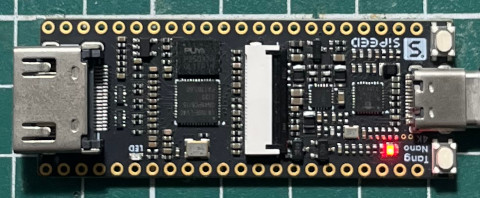
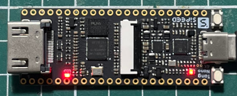

Steward
分享是一種喜悅、更是一種幸福
微處理器 - Gowin GW1NSR-LV4CQN48PC6/I5 (Lichee Tang Nano 4K) - Gowin IDE - Verilog - LED
main.gprj
<?xml version="1" encoding="UTF-8"?>
<!DOCTYPE GOWIN>
<Project>
<Template>FPGA</Template>
<Version>5</Version>
<Device name="GW1NSR-4C" pn="GW1NSR-LV4CQN48PC6/I5">gw1nsr4c-000</Device>
<FileList>
<File path="main.v" type="file.verilog" enable="1"/>
<File path="main.cst" type="file.cst" enable="1"/>
</FileList>
</Project>
main.v
module main (
input clk,
output reg led
);
reg [23:0] clk_cnt;
always @(posedge clk) begin
if (clk_cnt == 24'd10000000)
clk_cnt <= 24'd0;
else
clk_cnt <= clk_cnt + 1;
if (clk_cnt == 24'd10000000)
led <= ~led;
end
endmodule
main.cst
IO_LOC "led" 10; IO_LOC "clk" 45;
編譯
$ /opt/gowin/IDE/bin/gw_sh
*** GOWIN Tcl Command Line Console ***
% open_project main.gprj
Open project /home/steward/Downloads/main.gprj finished
% run all
GowinSynthesis start
Running parser ...
Analyzing Verilog file '/home/steward/Downloads/main.v'
Compiling module 'led'("/home/steward/Downloads/main.v":1)
WARN (EX3791) : Expression size 25 truncated to fit in target size 24("/home/steward/Downloads/main.v":12)
NOTE (EX0101) : Current top module is "led"
[5%] Running netlist conversion ...
Running device independent optimization ...
[10%] Optimizing Phase 0 completed
[15%] Optimizing Phase 1 completed
[25%] Optimizing Phase 2 completed
Running inference ...
[30%] Inferring Phase 0 completed
[40%] Inferring Phase 1 completed
[50%] Inferring Phase 2 completed
[55%] Inferring Phase 3 completed
Running technical mapping ...
[60%] Tech-Mapping Phase 0 completed
[65%] Tech-Mapping Phase 1 completed
[75%] Tech-Mapping Phase 2 completed
[80%] Tech-Mapping Phase 3 completed
[90%] Tech-Mapping Phase 4 completed
[95%] Generate netlist file "/home/steward/Downloads/impl/gwsynthesis/main.vg" completed
[100%] Generate report file "/home/steward/Downloads/impl/gwsynthesis/main_syn.rpt.html" completed
GowinSynthesis finish
Reading netlist file: "/home/steward/Downloads/impl/gwsynthesis/main.vg"
Parsing netlist file "/home/steward/Downloads/impl/gwsynthesis/main.vg" completed
Processing netlist completed
Reading constraint file: "/home/steward/Downloads/main.cst"
Physical Constraint parsed completed
Running placement......
[10%] Placement Phase 0 completed
[20%] Placement Phase 1 completed
[30%] Placement Phase 2 completed
WARN (TA1132) : 'clk' was determined to be a clock but was not created.
[50%] Placement Phase 3 completed
Running routing......
[60%] Routing Phase 0 completed
[70%] Routing Phase 1 completed
[80%] Routing Phase 2 completed
WARN (PR1014) : Generic routing resource will be used to clock signal 'clk_d' by the specified constraint. And then it may lead to the excessive delay or skew
[90%] Routing Phase 3 completed
Running timing analysis......
[95%] Timing analysis completed
Placement and routing completed
Bitstream generation in progress......
Bitstream generation completed
Running power analysis......
[100%] Power analysis completed
Generate file "/home/steward/Downloads/impl/pnr/main.power.html" completed
Generate file "/home/steward/Downloads/impl/pnr/main.pin.html" completed
Generate file "/home/steward/Downloads/impl/pnr/main.rpt.html" completed
Generate file "/home/steward/Downloads/impl/pnr/main.rpt.txt" completed
Generate file "/home/steward/Downloads/impl/pnr/main.tr.html" completed
Sun Dec 8 09:45:58 2024
下載
$ openFPGALoader -m -b tangnano4k impl/pnr/main.fs
empty
write to ram
Jtag frequency : requested 6.00MHz -> real 6.00MHz
Parse file Parse impl/pnr/main.fs:
Done
DONE
Load SRAM: [==================================================] 100.00%
Done
DONE
完成

